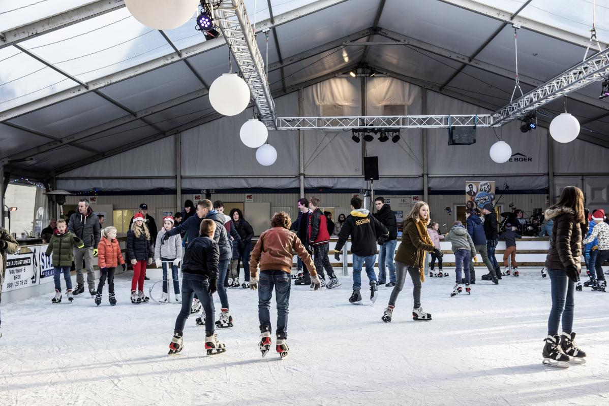
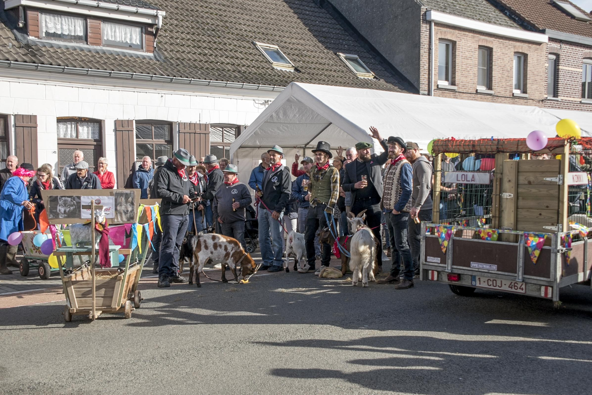

Elke winter toveren we het Vrijthof om tot een gezellig kerstplein waar je met het hele gezin kan komen schaatsen op onze overdekte ijspiste. Met tal van activiteiten op en rond de piste is dit een gezellige ontmoetingsplek, ook voor wie liever geniet vanop een verwarmd terrasje. Een bezoek aan de ijspiste is dé ideale gezinsactiviteit tijdens de kerstperiode!
Uniek is de jaarlijkse Geitenmarkt, georganiseerd door geitenboeren. Het is geen echte markt maar een folkloristische stoet van verklede geiten die jaarlijks op kermismaandag, na de eerste zondag van oktober, door de straten trekt.